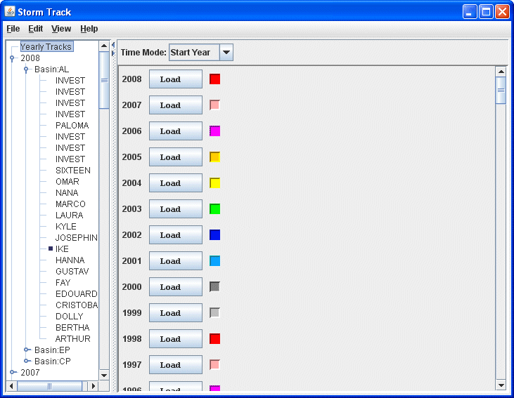
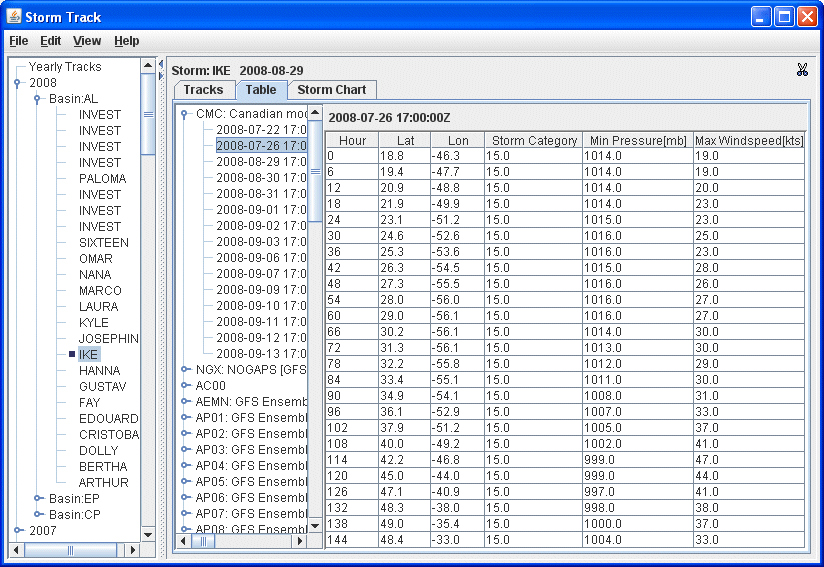

Overview
The Storm Track Control is used to control the display of single or multiple
storm tracks. First, to load in the ATCF data, selecting Data->Special->ATCF
Data will load in a data source with a predefined path to the National Hurricane
Center ftp site. Then, create the Storm Track display. The control window includes
a left panel which display a list of storm dataset collection. On the top of
the list is yearly option which allows user to display single or multiple years
storm tracks.

Selecting a single storm in the list, the control panel consists of three tabs,
the first tab is the storm track control, the second tab is the table of storm parameters,
the third tab is the storm chart control which displays all graphics of selected parameters.
In the storm track control tab, by default, only the checkbox of observation track is checked.
Turn on the Forecasts checkbox to show the forecast tracks.
In the storm track table tab, the data values of parameters of all the storm track points
associated with the specific storm track is showing. The control window includes a panel
which has a list of storm tracks grouped under each Tech. When a track is selected
according to its starting time, all the parameters are showing in the table.

Properties
- Points
Select the layout model for both Observation and Forecast track.
- Animation
Select the animation layout model for the Observation track and
the animation mode for the Forecast track.
- Color By
Select the fixed mode or color by parameter for both Observation and Forecast track.